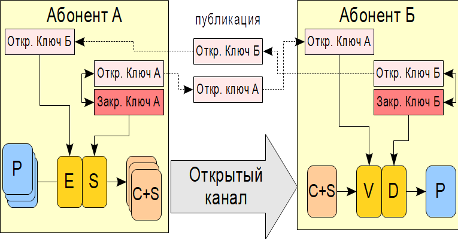

Важной частью современных информационных систем являются алгоритмы цифровой подписи. Электронная цифровая подпись (далее ЭЦП) является цифровым аналогом обычной подписи и служит для тех же целей, т. е. является заверением подписываемого документа подписывающим его пользователем. Это позволяет защититься от целого ряда угроз информационной безопасности. Основными такими угрозами являются:
− отказ отправителя от авторства переданного сообщения;
− фальсификация получателем полученного сообщения;
− модификация сообщения;
− маскировка нарушителя под легального пользователя.
Алгоритм ЭЦП состоит из двух частей − алгоритма генерации ЭЦП и алгоритма верификации ЭЦП. Для выполнения ЭЦП отправитель выполняет некоторое преобразование исходного сообщения, получая на выходе вектор данных сравнительно небольшой длины. Этот вектор называется цифровой подписью и присоединяется к передаваемому сообщению. При этом подписываемое сообщение может быть как зашифровано, так и не зашифровано, в зависимости от задач стоящих перед отправителем. Получатель применяет к цифровой подписи сообщения, принятого из канала связи, проверочное преобразование, в результате которого имеет возможность удостовериться в том, что подпись является корректной и что это подпись определенного лица. Существует несколько требований к цифровой подписи, обусловленных необходимостью противостояния различным видам атак :
− цифровая подпись должна легко генерироваться и проверяться независимо от длины подписываемого сообщения;
− цифровая подпись должна сложным образом зависеть от всего подписываемого сообщения (этим она отличается от обычной подписи) и даже при минимальном изменении исходного сообщения цифровая подпись должна становиться некорректной;
− выполнение проверки цифровой подписи некоторого автора не должно давать проверяющему возможности самостоятельного подписывания документов подписью этого автора.
Особенно остро проблема подписывания данных стоит при выполнении операций обмена ключами, в частности использование подписанных цифровых сертификатов ключей позволяет защититься от одной из главных проблем асимметричных криптосистем − от атаки «человек по середине».
В настоящее время существует множество алгоритмов ЭЦП, реализованных с использованием различных математических конструкций. Рассмотрим некоторые общие моменты, характерные для всех или большинства алгоритмов ЭЦП. На практике алгоритмы ЭЦП легко реализуются с использованием асимметричных алгоритмов шифрования. Собственно, с появлением двухключевых криптосистем и появились алгоритмы цифровой подписи, причем понятие ЭЦП ввели Уитфилд Диффи и Мартин Хеллман в 1976 году.
Общая схема выполнения и проверки ЭЦП представлена на рис. 5.14.
 |
Рис. 5.14. Обобщенная схема выработки и верификации ЭЦП |
При выполнении ЭЦП используется преобразование на основе асимметричного алгоритма, но с использованием своего закрытого ключа. Другими словами, вычислить цифровую подпись может только один абонент − владелец секретного ключа. Проверка подлинности ЭЦП выполняется на приемной стороне и использует открытый ключ пользователя, выполнившего подписание документа, т. е. проверить подлинность ЭЦП может любой желающий. На схеме операция подписания документа показана символом «S», операция проверки − символом «V».
Если в качестве цифровой подписи использовать непосредственное преобразование всего сообщения в ЭЦП, то в результате получится подпись длины равной длине сообщения. Кроме того, что цифровая подпись получается неприемлемой длины, вторым недостатком такого подхода является то, что процедура подписывания/проверки будет выполняться очень долго. Для устранения этих недостатков на практике выполняется подписывание не исходного сообщения, а его хэш-функции. Хэш-функция быстро вычисляется независимо от длины исходного сообщения, обеспечивает сложную зависимость результата от всех бит исходного текста и имеет небольшую длину результата. Это обеспечивает высокую скорость подписывания и исключает возможность модификации сообщения с сохранением значения хэш-функции.